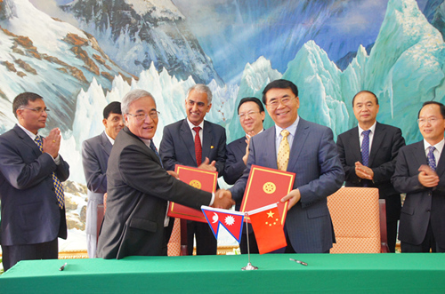

8月20日，中国科学院院长白春礼在京会见了来访的尼泊尔特里布文大学校长Hira Bahadur Maharjan教授一行。
白春礼首先对Maharjan校长率团正式访问中科院表示欢迎，并对今年4月访问尼泊尔期间尼方的热情接待表示感谢。白春礼回顾了访问期间与尼泊尔总理以及特里布文校方就如何进一步促进中尼科技合作所做的深入探讨。白春礼向尼方介绍了中科院为更多培养来自发展中国家的青年学生而设立的多种奖学金，尤其是新近设立的CAS-TWAS院长奖学金计划。他希望未来有更多来自尼泊尔的优秀青年学生申请该奖学金。此外，白春礼提出希望拓宽中尼科技合作研究领域，特别是加强中尼在气候变化和生物多样性保护等方面的合作。2015年将迎来中尼建交60周年，白春礼建议中尼双方届时可以组织相关领域的科学考察和国际学术研讨会等活动。
Maharjan对白春礼院长拨冗接待代表团表示感谢，他希望通过与中科院的合作，将中尼科教合作推向更高层面。
会谈结束后，白春礼和Maharjan共同签署了《中国科学院和尼泊尔特里布文大学框架合作协议》。
中科院副秘书长谭铁牛，青藏高原研究所以及国际合作局有关负责同志参加会见。

白春礼与Maharjan共同签署《中国科学院和尼泊尔特里布文大学框架合作协议》